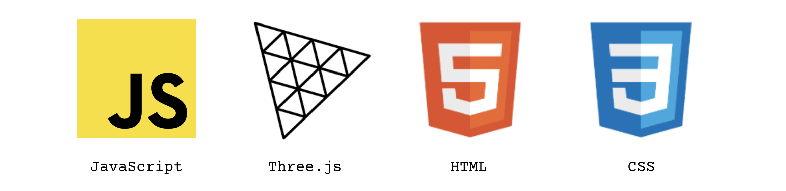

Art Institute of Chicago's Gallery Search Tool

This website allows a user to search for all artwork pieces available under the Art Institute of Chicago's API. The distinguishing feature of this website is its focus on aesthetics. I wanted to make every single artwork on this website look like it was an artifact hanging on the wall, but more vibrant with ambient colors. Similar to how you'll find a wall of frames at the Institute, you'll see in the demo below that I've mimicked this arrangement. Check out a demo here and my GitHub for this project here.